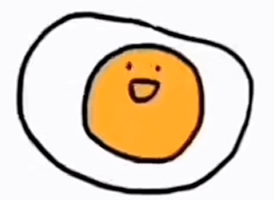

SCP-XT-011是一个类似于家鸡卵的实体，有一个主要成分为CaCO₃的“蛋壳”，编号SCP-XT-011-01内部物质组成成分不明，据推测主要成分为蛋白质[数据删除]内部物质为▇▇▇▇。
处于Ⅰ状态时，结构与普通家鸡鸡卵无区别。
处于Ⅱ状态时，[蛋黄[数据删除]]胎盘变为三部分，分别为两个点与一个半圆，似乎组成了一张笑脸。
处于Ⅲ状态时，蛋黄（编号SCP-XT-011-02）变形为人形，开始观察到动作，初步判定为▇▇舞蹈。
若无人干扰，▇▇舞蹈将持续（已观察最长持续3260小时6771小时）
若有生物产生使SCP-XT-011从Ⅰ状态进入Ⅱ状态的念头则会有▇▇音乐响起
▇▇音乐歌词见附表SCP-XT-011-附录Ⅰ
当一智慧生物（广义）拿起SCP-XT-011时，▇▇音乐将会响起（只有观察到SCP-XT-011的生物才能[听到[数据删除]]获取），此时SCP-XT-011仍处于Ⅰ状态，智慧生物编号为SCP-XT-011-03
SCP-XT-011-03由于对刺激的反应并执意试图打开SCP-XT-011，若此时击杀SCP-XT-011-03，则▇▇音乐停止。若无干扰，则SCP-XT-011将被打开并进入Ⅱ状态，此时SCP-XT-011-03任无反应并会一直注视着SCP-XT-011-02，若此时挡住SCP-XT-011-03的视线，SCP-XT-011-03即刻清醒，但仍能听到▇▇音乐。1.390s后，SCP-XT-011进入Ⅲ状态，SCP-XT-011-02变为一人形，体积不变，若无旁人干扰，将会跳起▇▇舞蹈，凡是看到SCP-XT-011-02的智慧生物（广义），无论是直接看到还是间接看到，都会一直注视并对外界刺激（除挡住视线）[直到死亡[数据删除]]大多数死亡。
介于SCP-XT-011吸引生物的目光的特性，尝试使用SCP-XT-011压制SCP-173（此处引用的SCP为本部SCP编号）